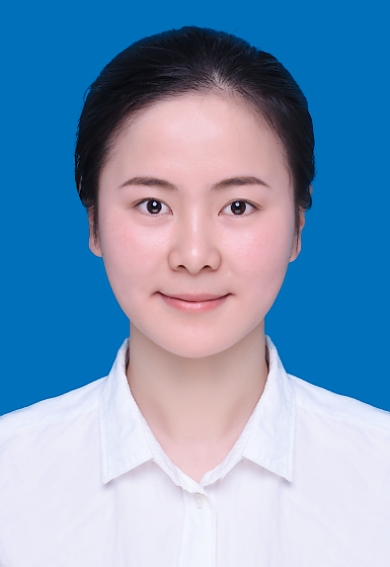

个人简历(Personal Resume)

个人信息（Personal Information）
| 姓名： |
舒钦 |
性别： |
女 |
| 出生年月： |
1998.10.24 |
政治面貌： |
中共党员 |
| 联系方式： |
1828738790 |
E-mail： |
13928298@qq.com |
| 住址： |
西安市 |
绩点排名： |
前10% |
| 毕业院校： |
长安大学 |
专业： |
通信工程 |
教育背景（Education）
| 2016.09-2020.06 |
长安大学 |
信息工程学院 |
通信工程（本科） |
- 主修课程：C++、C语言程序设计、计算机网络、单片机原理、现代交换原理、数字电子技术基础、模拟电子技术基础、通信原理、微机原理与接口技术等。
荣誉奖项（Honorary）
- 国家励志奖学金
- 校级“三好学生”
- 专业课程奖学金
- 优秀团员
项目实践（Practice）
- 保护非遗文化”社会实践活动宣传员
- 担任班级科技发展委员、专业信息员
- 参加全国大学生数学建模大赛
技能证书（Skills certificate）
- 大学四/六级（CET-4/6），良好的听说读写能力
- 计算机二级C语言证书
- C/C++编程能力
- 掌握HTML/CSS/JavaScript编程
- 了解TCP/IP协议
- 个人博客：https://flysara.github.io/
- 熟练使用Office相关软件
自我评价（Self-assessment）
- 本人性格开朗、为人诚恳、乐观向上、积极进取，有较强的适应能力和良好的学习能力。
- 大学期间在学生会做干事期间工作认真负责，在学习方面刻苦认真，在生活方面严于律己，积极参加课外实践活动，兼学习、工作、实践、兴趣于一身。